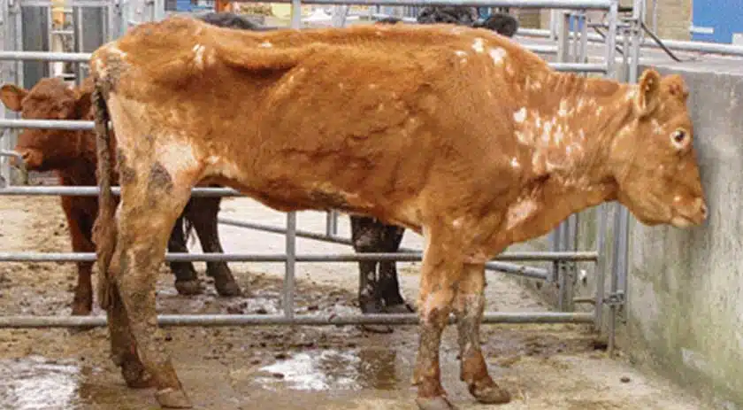

Johne's Disease in Cows

What is Johne's Disease?
Johne's Disease, also known as paratuberculosis, is a chronic bacterial infection caused by Mycobacterium avium subspecies paratuberculosis. It primarily affects the intestines of cattle, leading to severe weight loss and diarrhea.
Symptoms of Johne's Disease in Cows:
- Chronic, watery diarrhea
- Significant weight loss despite a normal appetite
- Reduced milk production
- Weakness and poor body condition
Causes:
- Ingestion of contaminated food, water, or milk
- Exposure to infected feces or contaminated environments
- Transmission from mother to calf through milk or in utero
Treatment and Prevention:
There is no effective cure for Johne's Disease. Prevention focuses on herd management, testing, culling infected animals, and maintaining strict sanitation practices. Controlling the spread requires preventing newborn calves from exposure to contaminated environments and infected adult animals.